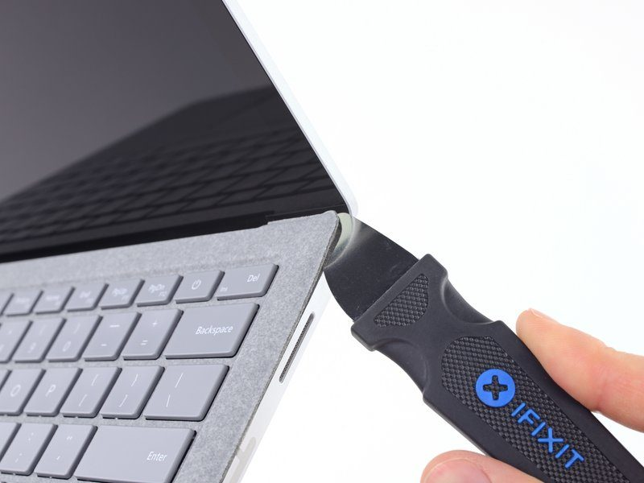

配图

iFixit：织物下的金属屏蔽板与塑料点焊

iFixit：撬起 Alcantara 覆面
图片版权归原作者所有，仅作个人学习收藏；出处见文末「来源与核实记录」。
结构原理
本节数字只写来源里给出的；来源没有就写「来源未给出」。
堆叠方案
方向：从 C 面（键盘面）向下
| 层级 | 零件 | 材料 | 厚度/尺寸 | 固定方式 | 依据 |
|---|---|---|---|---|---|
| L1 | Alcantara 织物覆面 | Alcantara | 来源未给出 | 胶粘（撬时以为是卡扣，Step 5 证实为点焊） | Step 4-5 |
| L2 | 金属屏蔽板 | 金属 | 来源未给出 | 下方胶粘 + 塑料件超声波点焊 | Step 5 |
| L3 | 键盘板 | — | 来源未给出 | 长排线连接，连接器压在主板卡扣屏蔽罩下 | Step 6 |
| L4 | 主板 / 散热 / 电池 | — | 电池 45.2 Wh | — | Step 13 |
| 底面 | 橡胶脚垫 | 橡胶 | 来源未给出 | 下面是金属脚而非螺丝 | Step 4 |
剖面示意：
flowchart TB N0["Alcantara(胶粘)"] N1["金属屏蔽板(超声点焊+胶)"] N2["键盘板"] N3["主板/散热/电池"] N0 --> N1 --> N2 --> N3
零件清单
| 零件 | 数量 | 功能 | 材料 | 依据 |
|---|---|---|---|---|
| Alcantara 覆面 | 1 | 外观、触感 | 织物 | Step 4 |
| 超声波焊点 | 多处（数量来源未给出） | 固定屏蔽板与塑料件 | 塑料 | Step 5 |
| 电池 | 1 | 45.2 Wh | 锂电 | Step 13 |
装配顺序
- (按拆解顺序反推) 装电池、主板、散热
- 键盘板接排线
- 屏蔽板与塑料件超声波点焊、胶粘
- 粘 Alcantara 覆面
来源只给出（破坏性）拆解顺序，以上为反推。
受力与运动分析
- 受力路径：来源未讨论受力。
- 运动关系：无相对运动（永久连接）。
- 失效风险：打开过程会破坏焊点与织物，无法复原；电池更换困难且危险（结论）。
设计要点与参数
| 要点 | 内容 | 依据 |
|---|---|---|
| 可维修评分 | 0/10 | Step 15 |
| 电池 | 45.2 Wh | Step 13 |
| 焊点数量/尺寸 | 来源未给出 | — |
优缺点
优点
- 外观无螺丝、整体感强
- 织物覆面带来独特触感
缺点 / 代价
- 永久连接，无法非破坏性维修
- 电池/接口更换代价极高
可借鉴点
- 超声波点焊适合「永不打开」的部件；需要维修的面不要用
- 外观覆面（织物、皮革）与可拆结构冲突时，考虑做成可拆的饰板
相关案例
来源与核实记录
- 主来源：Microsoft Surface Laptop Teardown（2017-06-16，Evan Noronha / iFixit）
- 核实：2026-11-13 通过 iFixit API 读取 15 步原文，核对 Alcantara、超声波点焊、电池与评分。